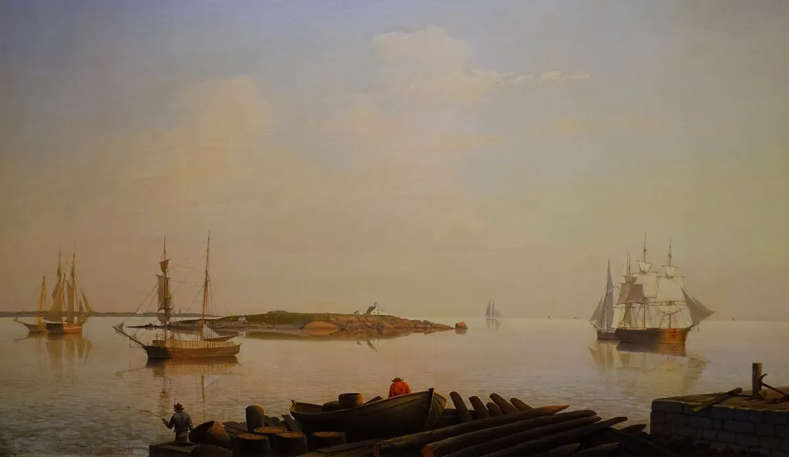

Site 1 of 9 · Fitz Henry Lane
Fort Point, looking at Ten Pound Island
Vantage documented

- Standing point
- Fort Point (42.60840, -70.66327)
- Looking at
- Ten Pound Island Light
- Direction of view
- SSW, 194° from true north
- Distance to subject
- 750 m (2,460 ft)
- The painter's light
- two hours before sunset: about 5:28 p.m. on August 25, 2027
Where they stood
Lane's catalogue raisonné identifies the foreground of Ten Pound Island, Gloucester as George Rogers's wharf on Fort Point, with the island at center and Eastern Point beyond; Erik Ronnberg aligned the viewpoint on the 1865 Harbor Commissioners' chart.167 For Ship in Fog the catalogue puts Lane in the channel “just off Fort Point.”171 The 1847 Thyssen picture was taken from a little higher and farther back, near Duncan's Point.172
The light
The catalogue calls the light of Ten Pound Island “the hazy light of a late summer afternoon,” in apricot hues.167 Ship in Fog is early morning, the summer sea fog burning off in stages.171
Paint it today
- The island and harbor mouth are unchanged in outline, but Fort Point's 1850s wharves are gone, and the tower Lane painted (1821) was replaced in 1881.173
- We could not confirm public shore access on Fort Point itself. Ten Pound Island is also visible across the water from a public way on Rocky Neck.174
- For the Lane effect, go in late August, about two hours before sunset; for the fog picture, a still June or July morning.